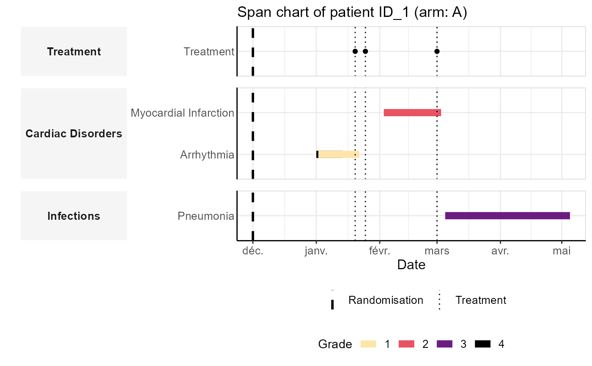

plot_patient_panchart.RdThis function visualizes the timeline of adverse events (AEs), treatments, and randomization for a selected patient. The span chart helps track AE duration and treatment events relative to randomization.
plot_patient_panchart(
df_soc_pt,
df_pat_grp_rando,
df_pat_pt_grade_date,
df_pat_treatment_date,
pat_id,
vec_fill_color = viridis::viridis(n = 4, direction = -1, end = 0.95, option = "magma")
)A data frame mapping System Organ Class (SOC) to Preferred Terms (PT).
A data frame containing patient IDs, randomization groups, and randomization dates.
A data frame with patient IDs, PT terms, AE grades, start and end dates of AEs.
A data frame with patient IDs and treatment dates.
A character string specifying the patient ID to plot.
A vector of colors for AE grades. Default is viridis::viridis(n = 4).
A ggplot object representing the patient span chart.
df_pat_grp_rando <- data.frame(
id_pat = c("ID_1", "ID_2"),
grp = c("A", "B"),
rando_date = c("2020-12-01", "2021-01-03")
)
df_pat_pt_grade_date <- data.frame(
id_pat = c("ID_1", "ID_1", "ID_1", "ID_1", "ID_2"),
pt = c("Arrhythmia", "Myocardial Infarction", "Arrhythmia",
"Pneumonia", "Pneumonia"),
grade = c(4, 2, 1, 3, 4),
start = c("2021-01-01", "2021-02-03", "2021-01-02", "2021-03-05", "2021-02-01"),
end = c("2021-01-14", "2021-03-03", "2021-01-22", "2021-05-05", "2021-02-03")
)
df_pat_treatment_date <- data.frame(
id_pat = c("ID_1", "ID_1", "ID_1"),
treatment_date = c("2021-01-25", "2021-03-01", "2021-01-20")
)
df_soc_pt <- data.frame(
pt = c("Arrhythmia", "Myocardial Infarction", "Pneumonia", "Sepsis"),
soc = c("Cardiac Disorders", "Cardiac Disorders", "Infections", "Infections")
)
plot_patient_panchart(
df_soc_pt = df_soc_pt,
df_pat_grp_rando = df_pat_grp_rando,
df_pat_pt_grade_date = df_pat_pt_grade_date,
df_pat_treatment_date = df_pat_treatment_date,
pat_id = "ID_1"
)
